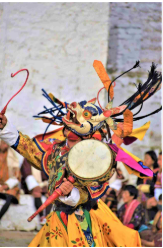
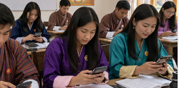
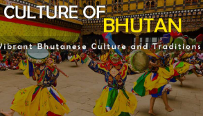

Understanding the Impact of Technology on Bhutanese Society
Social media has become an important part of everyday life in Bhutan. Platforms like Facebook, Instagram, TikTok, and YouTube are changing the way young people communicate, learn, and share ideas. While social media helps people connect with the world, it is also influencing Bhutanese traditions, language, clothing, and lifestyle.
Social media allows Bhutanese people to share their culture with the world. Traditional dances, festivals, food, and art can now be promoted online. Students can also learn new skills and gain knowledge through educational videos and online communities.

Many young people are becoming more influenced by foreign lifestyles shown on social media. Some traditional values and cultural practices are slowly being ignored. Excessive use of social media can also reduce family communication and affect students’ studies.

Bhutanese culture is unique and valuable. People should use social media responsibly by promoting local traditions, speaking Dzongkha, respecting elders, and participating in cultural events. Schools and families can help young people balance technology and tradition.
